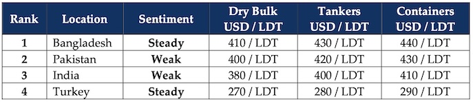

inWeekly Demolition Reports08/12/2025

As we head into the traditionally quieter festive / Christmas season, ship recycling markets appear to be hamstrungon the back of a stubborn and persistent lack of meaningful tonnage, violently collapsing fundamentals that were promptly followed by declining offers, and all of this ongoing non-stop for nearly all of 2025 that has seen purchasing sentiment in a post-HKC world get crushed under the weight of it all.
To start, the onset of December brought with it a declining Baltic Exchange that saw the Dry Index fall by about 3%, this week, dragged down by mounting pressure across all segments that saw capes slipping 4.4%, panamax dropping 1.4%, and the smaller segments shedding 5 basis points, all while oil barely moved the needle as it closed another week at region USD 59.70/barrel (expected to breach USD 60/barrel in the coming week) and inflation reported minor improvements at a couple of key ship recycling destinations.
But it were financial currencies that really battered both India and Bangladesh, all while Turkey perennially decorated the top three of the declining currency marathon that it alone has been on. Not wanting to be left behind, local steel plate prices also fell by just under USD 5/ton across all sub-continent recycling destinations, leaving ship recyclers firmly holding off on further negotiations as the week ended.
As such, the lack of tonnage has delivered yet another characteristically low supply of vessels for a few weeks now, especially considering the lack of the occasional large LDT LNG vessels (with around 15 sold so far this year) drying up as freight rates continue to remain at elevated overall levels, thus depriving ship recyclers for yet another week. Further cementing this fact was the sheer lack of arrivals at every sub-continent ship recycling location – probably a true first in its own right.
Thankfully, compulsion has successfully driven remarkable developments across the Indian sub-continent ship recycling sector, with HKC infrastructure upgrades still ongoing and a confirmed 23 HKC-certified ship recycling yards now added to the existing sub-continent fleet of HKC certified yards – including Pakistan’s first HKC approval that was announced just last week. Ever since the Hong Kong Convention came into force on June 26th earlier in the year, it has been encouraging to see increased investments and upgrades taking place at these new locations, ensuring a better and safer set of standards for responsible recycling.
Overall, 2025 will probably be the cherry-year of the last four and 2026 hopefully brings more tonnage and stability across the globe.
For Week 49 of 2025, GMS Market Rankings / vessel indications are as below.

📄 Download PDF: Ship-recycling-market-insight-Week-49-12-05-2025-Turkey_and-Ham...Strung.pdfSource: GMS,Inc.https://www.gmsinc.net/gms_new/index.php/web